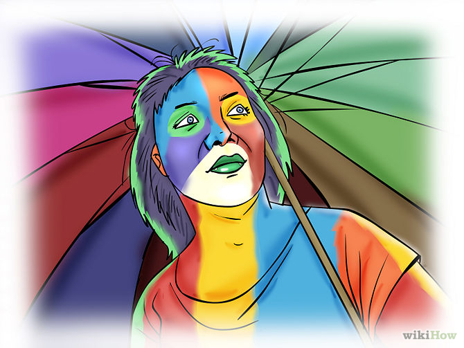
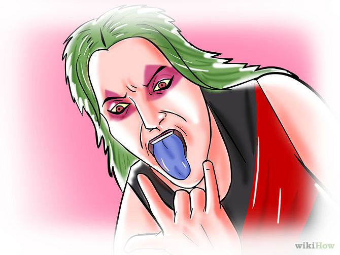
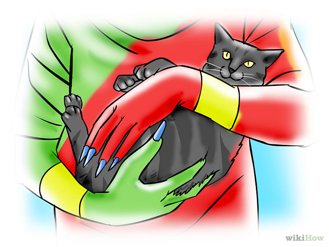
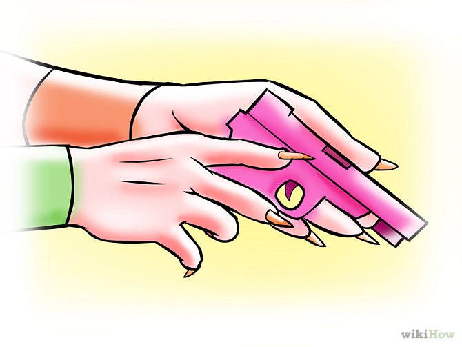
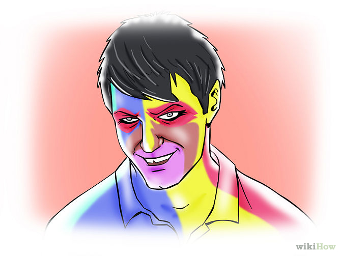
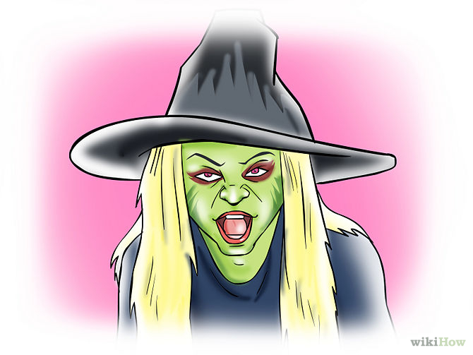
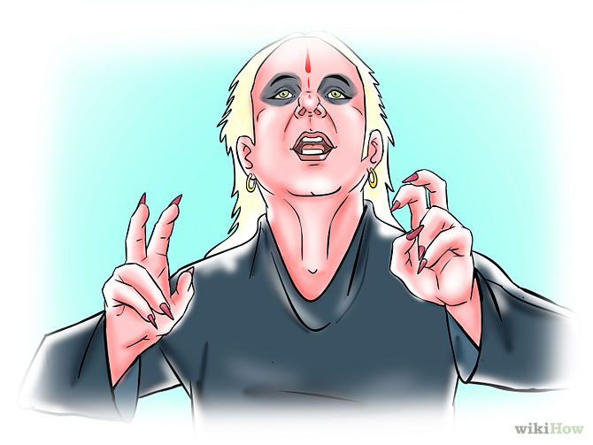
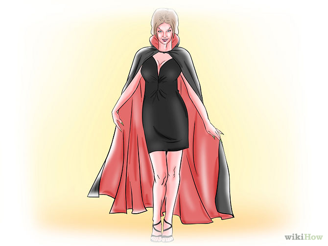
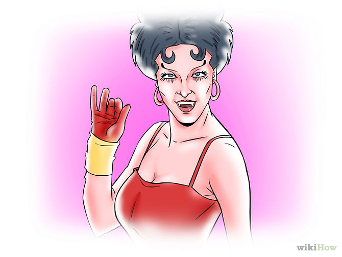
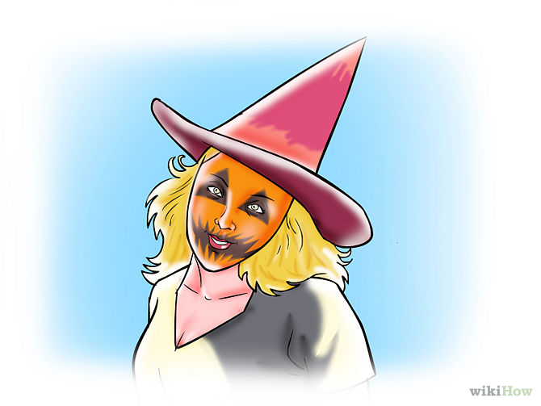

Exercise 1
How To Be A Creepy Person
Have you ever wanted to be that creep down the street? The scariest person at school? Well read on fellow creepers!
Steps

- Get Creepy Clothes. These can include many layers of tattered clothing, random bright clothes (such as Hawaiian shorts with an argyle sweater and a rainbow parasol), or dark, extreme Gothic clothing, maybe a meat dress! Wearing a lot of overdone makeup can also add to the effect.

- Listen To Off-Beat Music. This is to say, listen to dark scream for one song, and the next will be obnoxious disco, and the next Britney Spears and maybe even Lady GaGa. Weird combinations work best.

- Get a stuffed animal, like a cat, or a doll and carry it everywhere you go and refer to it as your 'best friend'. Pet it and say things like, Good Bessie, Good Girl, as well as telling people not to stare at it because it is shy. Name it. If it is a doll, give it a name like Paws or Spot. If it is an animal, give it a mundane or random human name like Herbert or Tina.

- Carry around a toy gun and name it. Talk about it like it is a human/companion of yours.

- Talk in a creepy accent.Combine many different accents. If you speak several languages, switch languages frequently. Talk in a German accent for a while and then stop and talk as you imagine Santa Claus would.

- Put Halloween/Christmas decorations up all year long. Giant Easter bunnies or Cupids work. And on days when it's not Halloween, get a costume and go door-to-door asking for candy.

- When people try to talk to you, say something unrelated.If they ask about the weather, tell them the Dark Lord is not pleased with their progress, as if you are also talking to someone else. If they ask, look blank and say something that makes it seem as if it never happened.

- Take to wearing a Halloween cape year round.
- Develop an obsession with something random. For example, if you are a fifty year old man, Hannah Montana. Learn the plot, quote it, wear a wig occasionally. Other things that you could use are endless, some examples being World of Warcraft, medieval torture devices, Harry Potter, bunnies, or the practice of making bread.

- Going into a shop and shout goodbye instead of hello is very creepy!

- Get the personality - don't smile a lot, but smirk in a sinister manner instead, laugh like a small child or chuckle deeply often.
Return To Top!